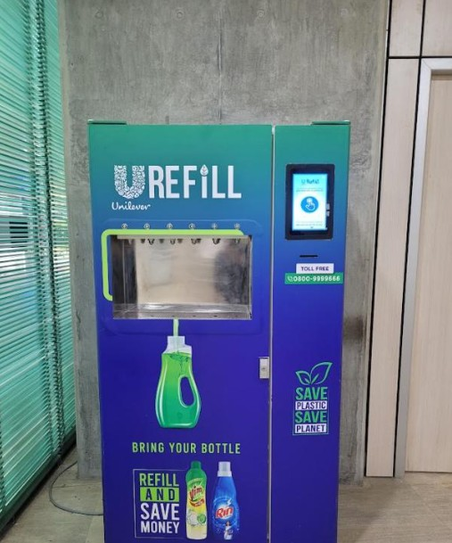
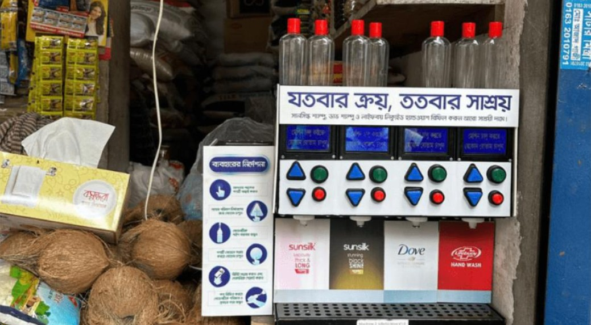
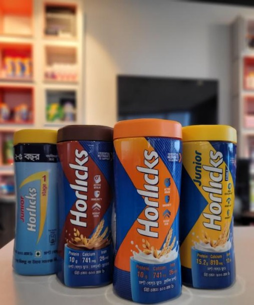
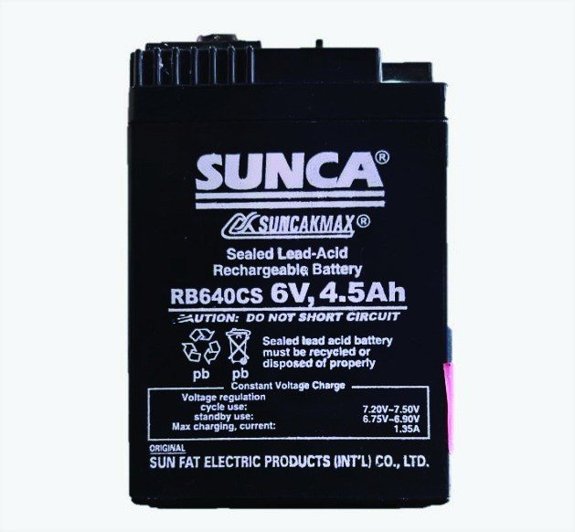
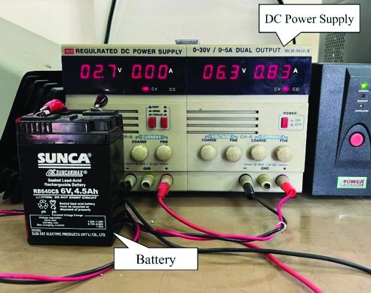
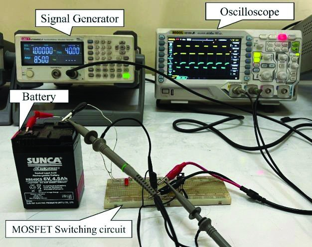
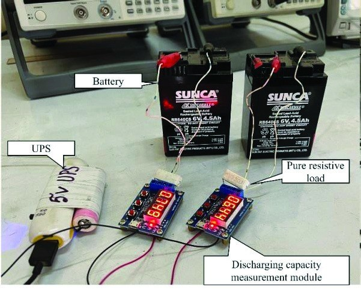

IEEE IAS GlobConET 2023 · from his thesis
Investigation of the impact of AC harmonics on lead-acid battery degradation
doi.org/10.1109/GlobConET56651.2023.101500926citations
Electrical engineer · Bangladesh
He spent three years at Unilever in R&D labs and on factory floors. His research asked a simple question: what does a noisy charger do to a battery?

About
Toukir likes the part of engineering where something works on paper and then misbehaves in the real world.
At Unilever Bangladesh he moved from packaging development in R&D to running production lines and plant utilities. Along the way he worked on a refill machine meant to cut plastic, the first locally moulded Horlicks jar, and the daily job of keeping 30+ lines productive.
His undergraduate research at the Islamic University of Technology looked at lead-acid batteries, the kind found in Bangladesh’s electric rickshaws and home UPS units, and how ripple from cheap chargers wears them out. That question is where he wants to go next.

With colleagues on a team outing
Work
Unilever Bangladesh Limited
Jun 2023 – Jul 2026
Jun – Sep 2023
A three-month internship that turned into two real projects.
যতবার ক্রয়, ততবার সাশ্রয়
“Save every time you buy”: the line on the shop-counter version
Urefill was the first refill machine in Bangladesh for liquid products such as dishwashing and laundry liquid. Shoppers bring a bottle, choose a product on the touchscreen and pay only for what they take, with no new plastic pack.
The modern trade machine stands in supermarkets. A smaller four-product dispenser brought the same idea to neighbourhood shops, with step-by-step instructions in Bangla.
plastic reduction
Modern trade machine

General trade dispenser in a local shop
Oct 2023 – Feb 2025
Packaging for the Foods portfolio, with two targets that usually pull against each other: lower cost and less plastic.

The Horlicks range in the new Icon Jar

Receiving the R&D H1 Award for Innovation
Mar 2025 – Jul 2026
Shift operations at the Kalurghat Factory in Chattogram, where output targets and safety have to hold at the same time.

The Mespack 2 maintenance and operations team
Research · undergraduate thesis
Lead-acid batteries power much of everyday Bangladesh: electric rickshaws, UPS units and household machines. They are rarely charged by clean lab equipment. Most chargers let some AC ripple through on top of the DC current.
Toukir and his co-authors charged three identical batteries with the same current. They changed only the shape of that current, then tracked the two signs of ageing: rising internal resistance and falling capacity.

The cell. 6 V, 4.5 Ah

DC charging from a bench supply

Ripple charging via a MOSFET switching circuit

Discharge and capacity measurement
Measured at full charge, cycles 1 to 35
Amp-hours delivered before 5.5 V
The battery charged with 100 Hz ripple aged fastest on both measures and showed the least consistent charging voltage. Data from Tables II and III of the paper, presented at IEEE GlobConET 2023 at Loughborough University London. Supervised by Fahim Faisal and Mirza Muntasir Nishat, funded by an IUT research grant.
Publications
IEEE IAS GlobConET 2023 · from his thesis
IEEE IAS GlobConET 2022 · pp. 406–410
Projects
2022
Switches capacitor banks in and out to hold the power factor above 0.95 as inductive loads change.
Arduino · capacitor banks · relays
2023
Sets cooling-fan speed with PWM from the GPU temperature and warns on an LCD before the card throttles.
PWM · temperature sensing · LCD
2023
Image processing of NASA imagery from 1991 to 2016, showing a sharp loss of old Arctic ice after 2005.
MATLAB · image processing
attendees at IUT Career Expo 2023, with 20+ companies
attendees at the 1st National Virtual Career Expo 2021, with 120 volunteers
Vice President, IUT Career and Business Society, Aug 2022 – Apr 2023
Contact
Open to conversations about energy storage, power systems, research positions and engineering roles.